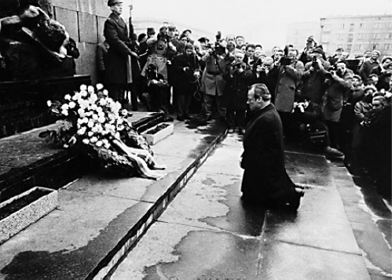
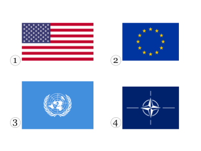

Alle 300 Fragen und Antworten zum Einbürgerungstest der Bundesrepublik Deutschland
Frage №1: Deutschland dürfen Menschen offen etwas gegen die Regierung sagen, weil …
- hier Meinungsfreiheit gilt.
Frage №2: In Deutschland können Eltern bis zum 14. Lebensjahr ihres Kindes entscheiden, ob es in der Schule am …
- Religionsunterricht teilnimmt.
Frage №3: Deutschland ist ein Rechtsstaat. Was ist damit gemeint?
- Alle Einwohner / Einwohnerinnen und der Staat müssen sich an die Gesetze halten.
Frage №4: Welches Recht gehört zu den Grundrechten in Deutschland?
- Meinungsfreiheit
Frage №5: Wahlen in Deutschland sind frei. Was bedeutet das?
- Der Wähler darf bei der Wahl weder beeinflusst noch zu einer bestimmten Stimmabgabe gezwungen werden und keine Nachteile durch die Wahl haben.
Frage №6: Wie heißt die deutsche Verfassung?
- Grundgesetz
Frage №7: Welches Recht gehört zu den Grundrechten, die nach der deutschen Verfassung garantiert werden? Das Recht auf …
- Glaubens- und Gewissensfreiheit.
Frage №8: Was steht nicht im Grundgesetz von Deutschland?
- Alle sollen gleich viel Geld haben.
Frage №9: Welches Grundrecht gilt in Deutschland nur für Ausländer / Ausländerinnen? Das Grundrecht auf …
- Asyl
Frage №10: Was ist mit dem deutschen Grundgesetz vereinbar?
- die Geldstrafe
Frage №11: Wie wird die Verfassung der Bundesrepublik Deutschland genannt?
- Grundgesetz
Frage №12: Eine Partei im Deutschen Bundestag will die Pressefreiheit abschaffen. Ist das möglich?
- Nein, denn die Pressefreiheit ist ein Grundrecht. Sie kann nicht abgeschafft werden.
Frage №13: Im Parlament steht der Begriff „Opposition“ für…
- alle Abgeordneten, die nicht zu der Regierungspartei/den Regierungsparteien gehören.
Frage №14: Meinungsfreiheit in Deutschland heißt, dass ich …
- meine Meinung in Leserbriefen äußern kann.
Frage №15: Was verbietet das deutsche Grundgesetz?
- Zwangsarbeit
Frage №16: Wann ist die Meinungsfreiheit in Deutschland eingeschränkt?
- bei der öffentlichen Verbreitung falscher Behauptungen über einzelne Personen
Frage №17: Die deutschen Gesetze verbieten …
- Ungleichbehandlung der Bürger und Bürgerinnen durch den Staat.
Frage №18: Welches Grundrecht ist in Artikel 1 des Grundgesetzes der Bundesrepublik Deutschland garantiert?
- die Unantastbarkeit der Menschenwürde
Frage №19: Was versteht man unter dem Recht der „Freizügigkeit“ in Deutschland?
- Man darf sich seinen Wohnort selbst aussuchen.
Frage №20: Eine Partei in Deutschland verfolgt das Ziel, eine Diktatur zu errichten. Sie ist dann …
- verfassungswidrig.
Frage №21: Welches ist das Wappen der Bundesrepublik Deutschland?

- 1
Frage №22: Was für eine Staatsform hat Deutschland?
- Republik
Frage №23: In Deutschland sind die meisten Erwerbstätigen …
- bei einer Firma oder Behörde beschäftigt.
Frage №24: Wie viele Bundesländer hat die Bundesrepublik Deutschland?
- 16
Frage №25: Was ist kein Bundesland der Bundesrepublik Deutschland?
- Elsass-Lothringen
Frage №26: Deutschland ist …
- ein demokratischer und sozialer Bundesstaat.
Frage №27: Deutschland ist …
- ein Bundesstaat.
Frage №28: Wer wählt in Deutschland die Abgeordneten zum Bundestag?
- das wahlberechtigte Volk
Frage №29: Welches Tier ist das Wappentier der Bundesrepublik Deutschland?
- Adler
Frage №30: Was ist kein Merkmal unserer Demokratie?
- Pressezensur
Frage №31: Die Zusammenarbeit von Parteien zur Bildung einer Regierung nennt man in Deutschland …
- Koalition.
Frage №32: Was ist keine staatliche Gewalt in Deutschland?
- Presse
Frage №33: Welche Aussage ist richtig? In Deutschland …
- sind Staat und Religionsgemeinschaften voneinander getrennt.
Frage №34: Was ist Deutschland nicht?
- eine Monarchie
Frage №35: Womit finanziert der deutsche Staat die Sozialversicherung?
- Sozialabgaben
Frage №36: Welche Maßnahme schafft in Deutschland soziale Sicherheit?
- die Krankenversicherung
Frage №37: Wie werden die Regierungschefs / Regierungschefinnen der meisten Bundesländer in Deutschland genannt?
- Ministerpräsident / Ministerpräsidentin
Frage №38: Die Bundesrepublik Deutschland ist ein demokratischer und sozialer …
- Bundesstaat.
Frage №39: Was hat jedes deutsche Bundesland?
- eine eigene Regierung
Frage №40: Mit welchen Worten beginnt die deutsche Nationalhymne?
- Einigkeit und Recht und Freiheit …
Frage №41: Warum gibt es in einer Demokratie mehr als eine Partei?
- weil dadurch die unterschiedlichen Meinungen der Bürger und Bürgerinnen vertreten werden
Frage №42: Wer beschließt in Deutschland ein neues Gesetz?
- das Parlament
Frage №43: Wann kann in Deutschland eine Partei verboten werden?
- wenn sie gegen die Verfassung kämpft
Frage №44: Wen kann man als Bürger / Bürgerin in Deutschland nicht direkt wählen?
- den Bundespräsidenten / die Bundespräsidentin
Frage №45: Zu welcher Versicherung gehört die Pflegeversicherung?
- Sozialversicherung
Frage №46: Der deutsche Staat hat viele Aufgaben. Welche Aufgabe gehört dazu?
- Er baut Straßen und Schulen.
Frage №47: Der deutsche Staat hat viele Aufgaben. Welche Aufgabe gehört nicht dazu?
- Er bezahlt für alle Staatsangehörigen Urlaubsreisen.
Frage №48: Welches Organ gehört nicht zu den Verfassungsorganen Deutschlands?
- die Bürgerversammlung
Frage №49: Wer bestimmt in Deutschland die Schulpolitik?
- die Bundesländer
Frage №50: Die Wirtschaftsform in Deutschland nennt man …
- soziale Marktwirtschaft.
Frage №51: Zu einem demokratischen Rechtsstaat gehört es nicht, dass …
- Menschen von einer Privatpolizei ohne Grund verhaftet werden.
Frage №52: Was bedeutet „Volkssouveränität“? Alle Staatsgewalt geht vom …
- Volke aus.
Frage №53: Was bedeutet „Rechtsstaat“ in Deutschland?
- Der Staat muss die Gesetze einhalten.
Frage №54: Was ist keine staatliche Gewalt in Deutschland?
- Direktive
Frage №55: Was zeigt dieses Bild?
- den Bundestagssitz in Berlin
Frage №56: Welches Amt gehört in Deutschland zur Gemeindeverwaltung?
- Ordnungsamt
Frage №57: Wer wird meistens zum Präsidenten / zur Präsidentin des Deutschen Bundestages gewählt?
- ein Abgeordneter / eine Abgeordnete der stärksten Fraktion
Frage №58: Wer ernennt in Deutschland die Minister / die Ministerinnen der Bundesregierung?
- der Bundespräsident / die Bundespräsidentin
Frage №59: Welche Parteien wurden in Deutschland 2007 zur Partei „Die Linke“?
- PDS und WASG
Frage №60: In Deutschland gehören der Bundestag und der Bundesrat zur …
- Legislative.
Frage №61: Was bedeutet „Volkssouveränität“?
- Die Staatsgewalt geht vom Volke aus.
Frage №62: Wenn das Parlament eines deutschen Bundeslandes gewählt wird, nennt man das …
- Landtagswahl.
Frage №63: Was gehört in Deutschland nicht zur Exekutive?
- die Gerichte
Frage №64: Die Bundesrepublik Deutschland ist heute gegliedert in …
- Bund, Länder und Kommunen.
Frage №65: Es gehört nicht zu den Aufgaben des Deutschen Bundestages, …
- das Bundeskabinett zu bilden.
Frage №66: Wer schrieb den Text zur deutschen Nationalhymne?
- Heinrich Hoffmann von Fallersleben
Frage №67: Was ist in Deutschland vor allem eine Aufgabe der Bundesländer?
- Schulpolitik
Frage №68: Warum kontrolliert der Staat in Deutschland das Schulwesen?
- weil es nach dem Grundgesetz seine Aufgabe ist
Frage №69: Die Bundesrepublik Deutschland hat einen dreistufigen Verwaltungsaufbau. Wie heißt die unterste politische Stufe?
- Gemeinden
Frage №70: Der deutsche Bundespräsident Gustav Heinemann gibt Helmut Schmidt 1974 die Ernennungsurkunde zum deutschen Bundeskanzler. Was gehört zu den Aufgaben des deutschen Bundespräsidenten / der deutschen Bundespräsidentin?
- Er / Sie schlägt den Kanzler / die Kanzlerin zur Wahl vor.
Frage №71: Wo hält sich der deutsche Bundeskanzler / die deutsche Bundeskanzlerin am häufigsten auf? Am häufigsten ist er / sie …
- in Berlin, weil sich dort das Bundeskanzleramt und der Bundestag befinden.
Frage №72: Wie heißt der jetzige Bundeskanzler / die jetzige Bundeskanzlerin von Deutschland?
- Olaf Scholz
Frage №73: Die beiden größten Fraktionen im Deutschen Bundestag heißen zurzeit …
- CDU/CSU und SPD.
Frage №74: Wie heißt das Parlament für ganz Deutschland?
- Bundestag
Frage №75: Wie heißt Deutschlands heutiges Staatsoberhaupt?
- Frank-Walter Steinmeier
Frage №76: Was bedeutet die Abkürzung CDU in Deutschland?
- Christlich Demokratische Union
Frage №77: Was ist die Bundeswehr?
- die deutsche Armee
Frage №78: Was bedeutet die Abkürzung SPD?
- Sozialdemokratische Partei Deutschlands
Frage №79: Was bedeutet die Abkürzung FDP in Deutschland?
- Freie Demokratische Partei
Frage №80: Welches Gericht in Deutschland ist zuständig für die Auslegung des Grundgesetzes?
- Bundesverfassungsgericht
Frage №81: Wer wählt den Bundeskanzler / die Bundeskanzlerin in Deutschland?
- der Bundestag
Frage №82: Wer leitet das deutsche Bundeskabinett?
- der Bundeskanzler / die Bundeskanzlerin
Frage №83: Wer wählt den deutschen Bundeskanzler / die deutsche Bundeskanzlerin?
- der Bundestag
Frage №84: Welche Hauptaufgabe hat der deutsche Bundespräsident / die deutsche Bundespräsidentin? Er / Sie …
- repräsentiert das Land.
Frage №85: Wer bildet den deutschen Bundesrat?
- die Regierungsvertreter der Bundesländer
Frage №86: Wer wählt in Deutschland den Bundespräsidenten / die Bundespräsidentin?
- die Bundesversammlung
Frage №87: Wer ist das Staatsoberhaupt der Bundesrepublik Deutschland?
- der Bundespräsident / die Bundespräsidentin
Frage №88: Die parlamentarische Opposition im Deutschen Bundestag …
- kontrolliert die Regierung.
Frage №89: Wie nennt man in Deutschland die Vereinigung von Abgeordneten einer Partei im Parlament?
- Fraktion
Frage №90: Die deutschen Bundesländer wirken an der Gesetzgebung des Bundes mit durch …
- den Bundesrat.
Frage №91: In Deutschland kann ein Regierungswechsel in einem Bundesland Auswirkungen auf die Bundespolitik haben. Das Regieren wird …
- schwieriger, wenn dadurch die Mehrheit im Bundesrat verändert wird.
Frage №92: Was bedeutet die Abkürzung CSU in Deutschland?
- Christlich Soziale Union
Frage №93: Je mehr „Zweitstimmen“ eine Partei bei einer Bundestagswahl bekommt, desto …
- mehr Sitze erhält die Partei im Parlament.
Frage №94: Ab welchem Alter darf man in Deutschland an der Wahl zum Deutschen Bundestag teilnehmen?
- 18
Frage №95: Was gilt für die meisten Kinder in Deutschland?
- Schulpflicht
Frage №96: Was muss jeder deutsche Staatsbürger / jede deutsche Staatsbürgerin ab dem 16. Lebensjahr besitzen?
- einen Personalausweis
Frage №97: Was bezahlt man in Deutschland automatisch, wenn man fest angestellt ist?
- Sozialversicherung
Frage №98: Wenn Abgeordnete im Deutschen Bundestag ihre Fraktion wechseln, ...
- kann die Regierung ihre Mehrheit verlieren.
Frage №99: Wer bezahlt in Deutschland die Sozialversicherungen?
- Arbeitgeber / Arbeitgeberinnen und Arbeitnehmer / Arbeitnehmerinnen
Frage №100: Was gehört nicht zur gesetzlichen Sozialversicherung?
- die Lebensversicherung
Frage №101: Gewerkschaften sind Interessenverbände der …
- Arbeitnehmer und Arbeitnehmerinnen.
Frage №102: Womit kann man in der Bundesrepublik Deutschland geehrt werden, wenn man auf politischem, wirtschaftlichem, kulturellem, geistigem oder sozialem Gebiet eine besondere Leistung erbracht hat? Mit dem …
- Bundesverdienstkreuz.
Frage №103: Was wird in Deutschland als „Ampelkoalition“ bezeichnet? Die Zusammenarbeit …
- von SPD, FDP und Bündnis 90/Die Grünen in einer Regierung
Frage №104: Eine Frau in Deutschland verliert ihre Arbeit. Was darf nicht der Grund für diese Entlassung sein?
- Die Frau bekommt ein Kind und ihr Chef weiß das.
Frage №105: Was ist eine Aufgabe von Wahlhelfern / Wahlhelferinnen in Deutschland?
- Sie zählen die Stimmen nach dem Ende der Wahl.
Frage №106: In Deutschland helfen ehrenamtliche Wahlhelfer und Wahlhelferinnen bei den Wahlen. Was ist eine Aufgabe von Wahlhelfern / Wahlhelferinnen?
- Sie zählen die Stimmen nach dem Ende der Wahl.
Frage №107: Für wie viele Jahre wird der Bundestag in Deutschland gewählt?
- 4 Jahre
Frage №108: Bei einer Bundestagswahl in Deutschland darf jeder wählen, der …
- Bürger / Bürgerin der Bundesrepublik Deutschland ist und mindestens 18 Jahre alt ist.
Frage №109: Wie oft gibt es normalerweise Bundestagswahlen in Deutschland?
- alle vier Jahre
Frage №110: Für wie viele Jahre wird der Bundestag in Deutschland gewählt?
- 4 Jahre
Frage №111: In Deutschland darf man wählen. Was bedeutet das?
- Alle deutschen Staatsangehörigen dürfen wählen, wenn sie das Mindestalter erreicht haben.
Frage №112: Die Wahlen in Deutschland sind …
- geheim.
Frage №113: Wahlen in Deutschland gewinnt die Partei, die …
- die meisten Stimmen bekommt.
Frage №114: An demokratischen Wahlen in Deutschland teilzunehmen ist …
- ein Recht.
Frage №115: Was bedeutet „aktives Wahlrecht“ in Deutschland?
- Man kann wählen.
Frage №116: Wenn Sie bei einer Bundestagswahl in Deutschland wählen dürfen, heißt das …
- aktives Wahlrecht.
Frage №117: Wie viel Prozent der Zweitstimmen müssen Parteien mindestens bekommen, um in den Deutschen Bundestag gewählt zu werden?
- 5 %
Frage №118: Was regelt das Wahlrecht in Deutschland?
- Wer wählen darf, kann wählen.
Frage №119: Wahlen in Deutschland sind frei. Was bedeutet das?
- Jede Person kann ohne Zwang entscheiden, ob sie wählen möchte und wen sie wählen möchte.
Frage №120: Das Wahlsystem in Deutschland ist ein …
- Mehrheits- und Verhältniswahlrecht.
Frage №121: Eine Partei möchte in den Deutschen Bundestag. Sie muss aber einen Mindestanteil an Wählerstimmen haben. Das heißt …
- 5 %-Hürde.
Frage №122: Welchem Grundsatz unterliegen Wahlen in Deutschland? Wahlen in Deutschland sind …
- frei, gleich, geheim.
Frage №123: Was ist in Deutschland die „5 %-Hürde“?
- Mindestanteil an Wählerstimmen, um ins Parlament zu kommen
Frage №124: Die Bundestagswahl in Deutschland ist die Wahl …
- des Parlaments für Deutschland.
Frage №125: In einer Demokratie ist eine Funktion von regelmäßigen Wahlen, …
- nach dem Willen der Wählermehrheit den Wechsel der Regierung zu ermöglichen.
Frage №126: Was bekommen wahlberechtigte Bürger und Bürgerinnen in Deutschland vor einer Wahl?
- eine Wahlbenachrichtigung von der Gemeinde
Frage №127: Warum gibt es die 5 %-Hürde im Wahlgesetz der Bundesrepublik Deutschland? Es gibt sie, weil …
- viele kleine Parteien die Regierungsbildung erschweren.
Frage №128: Parlamentsmitglieder, die von den Bürgern und Bürgerinnen gewählt werden, nennt man …
- Abgeordnete.
Frage №129: Vom Volk gewählt wird in Deutschland …
- der Bundestag.
Frage №130: Welcher Stimmzettel wäre bei einer Bundestagswahl gültig?

- 1
Frage №131: In Deutschland ist ein Bürgermeister / eine Bürgermeisterin …
- das Oberhaupt einer Gemeinde.
Frage №132: Viele Menschen in Deutschland arbeiten in ihrer Freizeit ehrenamtlich. Was bedeutet das?
- Sie arbeiten freiwillig und unbezahlt in Vereinen und Verbänden.
Frage №133: Was ist bei Bundestags- und Landtagswahlen in Deutschland erlaubt?
- Man kann durch Briefwahl seine Stimme abgeben.
Frage №134: Man will die Buslinie abschaffen, mit der Sie immer zur Arbeit fahren. Was können Sie machen, um die Buslinie zu erhalten?
- Ich beteilige mich an einer Bürgerinitiative für die Erhaltung der Buslinie oder gründe selber eine Initiative.
Frage №135: Wen vertreten die Gewerkschaften in Deutschland?
- Arbeitnehmer und Arbeitnehmerinnen
Frage №136: Sie gehen in Deutschland zum Arbeitsgericht bei …
- ungerechtfertigter Kündigung durch Ihren Chef / Ihre Chefin.
Frage №137: Welches Gericht ist in Deutschland bei Konflikten in der Arbeitswelt zuständig?
- das Arbeitsgericht
Frage №138: Was kann ich in Deutschland machen, wenn mir mein Arbeitgeber / meine Arbeitgeberin zu Unrecht gekündigt hat?
- Kündigungsschutzklage erheben
Frage №139: Wann kommt es in Deutschland zu einem Prozess vor Gericht? Wenn jemand …
- eine Straftat begangen hat und angeklagt wird.
Frage №140: Was macht ein Schöffe / eine Schöffin in Deutschland? Er / Sie …
- entscheidet mit Richtern / Richterinnen über Schuld und Strafe.
Frage №141: Wer berät in Deutschland Personen bei Rechtsfragen und vertritt sie vor Gericht?
- ein Rechtsanwalt / eine Rechtsanwältin
Frage №142: Was ist die Hauptaufgabe eines Richters / einer Richterin in Deutschland? Ein Richter / eine Richterin …
- arbeitet an einem Gericht und spricht Urteile.
Frage №143: Ein Richter / eine Richterin in Deutschland gehört zur …
- Judikative.
Frage №144: Ein Richter / eine Richterin gehört in Deutschland zur …
- rechtsprechenden Gewalt.
Frage №145: In Deutschland wird die Staatsgewalt geteilt. Für welche Staatsgewalt arbeitet ein Richter / eine Richterin? Für die …
- Judikative.
Frage №146: Wie nennt man in Deutschland ein Verfahren vor einem Gericht?
- Prozess
Frage №147: Was ist die Arbeit eines Richters / einer Richterin in Deutschland?
- Recht sprechen
Frage №148: Was ist eine Aufgabe der Polizei in Deutschland?
- die Einhaltung von Gesetzen zu überwachen
Frage №149: Wer kann Gerichtsschöffe / Gerichtsschöffin in Deutschland werden?
- alle deutschen Staatsangehörigen älter als 24 und jünger als 70 Jahre
Frage №150: Ein Gerichtsschöffe / eine Gerichtsschöffin in Deutschland ist …
- ein ehrenamtlicher Richter / eine ehrenamtliche Richterin.
Frage №151: Wer baute die Mauer in Berlin?
- die DDR
Frage №152: Wann waren die Nationalsozialisten mit Adolf Hitler in Deutschland an der Macht?
- 1933 bis 1945
Frage №153: Was war am 8. Mai 1945?
- Ende des Zweiten Weltkriegs in Europa
Frage №154: Wann war der Zweite Weltkrieg zu Ende?
- 1945
Frage №155: Wann waren die Nationalsozialisten in Deutschland an der Macht?
- 1933 bis 1945
Frage №156: In welchem Jahr wurde Hitler Reichskanzler?
- 1933
Frage №157: Die Nationalsozialisten mit Adolf Hitler errichteten 1933 in Deutschland …
- eine Diktatur.
Frage №158: Das „Dritte Reich“ war eine …
- Diktatur.
Frage №159: Was gab es in Deutschland nicht während der Zeit des Nationalsozialismus?
- freie Wahlen
Frage №160: Welcher Krieg dauerte von 1939 bis 1945?
- der Zweite Weltkrieg
Frage №161: Was kennzeichnete den NS-Staat? Eine Politik …
- des staatlichen Rassismus
Frage №162: Claus Schenk Graf von Stauffenberg wurde bekannt durch …
- das Attentat auf Hitler am 20. Juli 1944.
Frage №163: In welchem Jahr zerstörten die Nationalsozialisten Synagogen und jüdische Geschäfte in Deutschland?
- 1938
Frage №164: Was passierte am 9. November 1938 in Deutschland?
- Jüdische Geschäfte und Synagogen werden durch Nationalsozialisten und ihre Anhänger zerstört.
Frage №165: Wie hieß der erste Bundeskanzler der Bundesrepublik Deutschland?
- Konrad Adenauer
Frage №166: Bei welchen Demonstrationen in Deutschland riefen die Menschen „Wir sind das Volk“?
- bei den Montagsdemonstrationen 1989 in der DDR
Frage №167: Welche Länder wurden nach dem Zweiten Weltkrieg in Deutschland als „Alliierte Besatzungsmächte“ bezeichnet?
- USA, Sowjetunion, Großbritannien, Frankreich
Frage №168: Welches Land war keine „Alliierte Besatzungsmacht“ in Deutschland?
- Japan
Frage №169: Wann wurde die Bundesrepublik Deutschland gegründet?
- 1949
Frage №170: Was gab es während der Zeit des Nationalsozialismus in Deutschland?
- das Verbot von Parteien
Frage №171: Soziale Marktwirtschaft bedeutet, die Wirtschaft …
- richtet sich nach Angebot und Nachfrage, aber der Staat sorgt für einen sozialen Ausgleich.
Frage №172: In welcher Besatzungszone wurde die DDR gegründet? In der …
- sowjetischen Besatzungszone.
Frage №173: Die Bundesrepublik Deutschland ist ein Gründungsmitglied …
- der Europäischen Union (EU).
Frage №174: Wann wurde die DDR gegründet?
- 1949
Frage №175: Wie viele Besatzungszonen gab es in Deutschland nach dem Zweiten Weltkrieg?
- 4
Frage №176: Wie waren die Besatzungszonen Deutschlands nach 1945 verteilt?
- 1=Großbritannien, 2=Sowjetunion, 3=USA, 4=Frankreich
Frage №177: Welche deutsche Stadt wurde nach dem Zweiten Weltkrieg in vier Sektoren aufgeteilt?
- Berlin
Frage №178: Vom Juni 1948 bis zum Mai 1949 wurden die Bürger und Bürgerinnen von West-Berlin durch eine Luftbrücke versorgt. Welcher Umstand war dafür verantwortlich?
- Die Sowjetunion unterbrach den gesamten Verkehr auf dem Landwege.
Frage №179: Wie endete der Zweite Weltkrieg in Europa offiziell?
- durch die bedingungslose Kapitulation Deutschlands
Frage №180: Der erste Bundeskanzler der Bundesrepublik Deutschland war …
- Konrad Adenauer.
Frage №181: Was wollte Willy Brandt mit seinem Kniefall 1970 im ehemaligen jüdischen Ghetto in Warschau ausdrücken?

- Er bat Polen und die polnischen Juden um Vergebung.
Frage №182: Welche Parteien wurden 1946 zwangsweise zur SED vereint, der Einheitspartei der späteren DDR?
- KPD und SPD
Frage №183: Wann war in der Bundesrepublik Deutschland das „Wirtschaftswunder“?
- 50er Jahre
Frage №184: Was nannten die Menschen in Deutschland sehr lange „Die Stunde Null“?
- Darunter verstand man das Ende des Zweiten Weltkrieges und den Beginn des Wiederaufbaus.
Frage №185: Wofür stand der Ausdruck „Eiserner Vorhang“? Für die Abschottung …
- des Warschauer Pakts gegen den Westen.
Frage №186: Im Jahr 1953 gab es in der DDR einen Aufstand, an den lange Zeit in der Bundesrepublik Deutschland ein Feiertag erinnerte. Wann war das?
- 17. Juni
Frage №187: Welcher deutsche Staat hatte eine schwarz-rot-goldene Flagge mit Hammer, Zirkel und Ährenkranz?
- DDR
Frage №188: In welchem Jahr wurde die Mauer in Berlin gebaut?
- 1961
Frage №189: Wann baute die DDR die Mauer in Berlin?
- 1961
Frage №190: Was bedeutet die Abkürzung DDR?
- Deutsche Demokratische Republik
Frage №191: Wann wurde die Mauer in Berlin für alle geöffnet?
- 1989
Frage №192: Welches heutige deutsche Bundesland gehörte früher zum Gebiet der DDR?
- Brandenburg
Frage №193: Von 1961 bis 1989 war Berlin …
- durch eine Mauer geteilt.
Frage №194: Am 3. Oktober feiert man in Deutschland den Tag der Deutschen …
- Einheit.
Frage №195: Welches heutige deutsche Bundesland gehörte früher zum Gebiet der DDR?
- Sachsen-Anhalt
Frage №196: Warum nennt man die Zeit im Herbst 1989 in der DDR „Die Wende“? In dieser Zeit veränderte sich die DDR politisch …
- von einer Diktatur zur Demokratie.
Frage №197: Welches heutige deutsche Bundesland gehörte früher zum Gebiet der DDR?
- Thüringen
Frage №198: Welches heutige deutsche Bundesland gehörte früher zum Gebiet der DDR?
- Sachsen
Frage №199: Mit der Abkürzung „Stasi“ meinte man in der DDR …
- das Ministerium für Staatssicherheit.
Frage №200: Welches heutige deutsche Bundesland gehörte früher zum Gebiet der DDR?
- Mecklenburg-Vorpommern
Frage №201: Welche der folgenden Auflistungen enthält nur Bundesländer, die zum Gebiet der früheren DDR gehörten?
- Mecklenburg-Vorpommern, Brandenburg, Sachsen, Sachsen-Anhalt, Thüringen
Frage №202: Zu wem gehörte die DDR im „Kalten Krieg“?
- zum Warschauer Pakt
Frage №203: Wie hieß das Wirtschaftssystem der DDR?
- Planwirtschaft
Frage №204: Wie wurden die Bundesrepublik Deutschland und die DDR zu einem Staat?
- Die heutigen fünf östlichen Bundesländer sind der Bundesrepublik Deutschland beigetreten.
Frage №205: Mit dem Beitritt der DDR zur Bundesrepublik Deutschland gehören die neuen Bundesländer nun auch …
- zur Europäischen Union.
Frage №206: Was bedeutete im Jahr 1989 in Deutschland das Wort „Montagsdemonstration“?
- Montags waren Demonstrationen gegen das DDR-Regime.
Frage №207: In welchem Militärbündnis war die DDR Mitglied?
- im Warschauer Pakt
Frage №208: Was war die „Stasi“?
- der Geheimdienst der DDR
Frage №209: Welches war das Wappen der Deutschen Demokratischen Republik?
- 4
Frage №210: Was ereignete sich am 17. Juni 1953 in der DDR?
- landesweite Streiks und ein Volksaufstand
Frage №211: Welcher Politiker steht für die „Ostverträge“?
- Willy Brandt
Frage №212: Wie heißt Deutschland mit vollem Namen?
- Bundesrepublik Deutschland
Frage №213: Wie viele Einwohner hat Deutschland?
- 83 Millionen
Frage №214: Welche Farben hat die deutsche Flagge?
- schwarz-rot-gold
Frage №215: Wer wird als „Kanzler der Deutschen Einheit“ bezeichnet?
- Helmut Kohl
Frage №216: Welches Symbol ist im Plenarsaal des Deutschen Bundestages zu sehen?
- der Bundesadler
Frage №217: In welchem Zeitraum gab es die Deutsche Demokratische Republik (DDR)?
- 1949 bis 1990
Frage №218: Wie viele Bundesländer kamen bei der Wiedervereinigung 1990 zur Bundesrepublik Deutschland hinzu?
- 5
Frage №219: Die Bundesrepublik Deutschland hat die Grenzen von heute seit …
- 1990.
Frage №220: Der 27. Januar ist in Deutschland ein offizieller Gedenktag. Woran erinnert dieser Tag?
- an die Opfer des Nationalsozialismus
Frage №221: Deutschland ist Mitglied des Schengener Abkommens. Was bedeutet das?
- Deutsche können in viele Länder Europas ohne Passkontrolle reisen.
Frage №222: Welches Land ist ein Nachbarland von Deutschland?
- Schweiz
Frage №223: Welches Land ist ein Nachbarland von Deutschland?
- Polen
Frage №224: Was bedeutet die Abkürzung EU?
- Europäische Union
Frage №225: In welchem anderen Land gibt es eine große deutschsprachige Bevölkerung?
- Österreich
Frage №226: Welche ist die Flagge der Europäischen Union?

- 2
Frage №227: Welches Land ist ein Nachbarland von Deutschland?
- Dänemark
Frage №228: Wie wird der Beitritt der DDR zur Bundesrepublik Deutschland im Jahr 1990 allgemein genannt?
- Deutsche Wiedervereinigung
Frage №229: Welches Land ist ein Nachbarland von Deutschland?
- Luxemburg
Frage №230: Das Europäische Parlament wird regelmäßig gewählt, nämlich alle …
- 5 Jahre.
Frage №231: Was bedeutet der Begriff „europäische Integration“?
- Der Begriff meint den Zusammenschluss europäischer Staaten zur EU.
Frage №232: Wer wird bei der Europawahl gewählt?
- die Abgeordneten des Europäischen Parlaments
Frage №233: Welches Land ist ein Nachbarland von Deutschland?
- Tschechien
Frage №234: Wo ist der Sitz des Europäischen Parlaments?
- Straßburg
Frage №235: Der französische Staatspräsident François Mitterrand und der deutsche Bundeskanzler Helmut Kohl gedenken in Verdun gemeinsam der Toten beider Weltkriege. Welches Ziel der Europäischen Union wird bei diesem Treffen deutlich?
- Frieden und Sicherheit in den Ländern der EU
Frage №236: Wie viele Mitgliedstaaten hat die EU heute?
- 27
Frage №237: 2007 wurde das 50-jährige Jubiläum der „Römischen Verträge“ gefeiert. Was war der Inhalt der Verträge?
- Gründung der Europäischen Wirtschaftsgemeinschaft (EWG)
Frage №238: An welchen Orten arbeitet das Europäische Parlament?
- Straßburg, Luxemburg und Brüssel
Frage №239: Durch welche Verträge schloss sich die Bundesrepublik Deutschland mit anderen Staaten zur Europäischen Wirtschaftsgemeinschaft zusammen?
- durch die „Römischen Verträge“
Frage №240: Seit wann bezahlt man in Deutschland mit dem Euro in bar?
- 2002
Frage №241: Frau Seger bekommt ein Kind. Was muss sie tun, um Elterngeld zu erhalten?
- Sie muss einen Antrag bei der Elterngeldstelle stellen.
Frage №242: Wer entscheidet, ob ein Kind in Deutschland in den Kindergarten geht?
- die Eltern / die Erziehungsberechtigten
Frage №243: Maik und Sybille wollen mit Freunden an ihrem deutschen Wohnort eine Demonstration auf der Straße abhalten. Was müssen sie vorher tun?
- Sie müssen die Demonstration anmelden.
Frage №244: Welchen Schulabschluss braucht man normalerweise, um an einer Universität in Deutschland ein Studium zu beginnen?
- das Abitur
Frage №245: Wer darf in Deutschland nicht als Paar zusammenleben?
- Anne (13 Jahre) und Tim (25 Jahre)
Frage №246: Ab welchem Alter ist man in Deutschland volljährig?
- 18
Frage №247: Eine Frau ist schwanger. Sie ist kurz vor und nach der Geburt ihres Kindes vom Gesetz besonders beschützt. Wie heißt dieser Schutz?
- Mutterschutz
Frage №248: Die Erziehung der Kinder ist in Deutschland vor allem Aufgabe …
- der Eltern.
Frage №249: Wer ist in Deutschland hauptsächlich verantwortlich für die Kindererziehung?
- die Eltern
Frage №250: In Deutschland hat man die besten Chancen auf einen gut bezahlten Arbeitsplatz, wenn man …
- gut ausgebildet ist.
Frage №251: Wenn man in Deutschland ein Kind schlägt, …
- kann man dafür bestraft werden.
Frage №252: In Deutschland …
- darf man zur gleichen Zeit nur mit einem Partner / einer Partnerin verheiratet sein.
Frage №253: Wo müssen Sie sich anmelden, wenn Sie in Deutschland umziehen?
- beim Einwohnermeldeamt
Frage №254: In Deutschland dürfen Ehepaare sich scheiden lassen. Meistens müssen sie dazu das „Trennungsjahr“ einhalten. Was bedeutet das?
- Mann und Frau führen mindestens ein Jahr getrennt ihr eigenes Leben. Danach ist die Scheidung möglich.
Frage №255: Bei Erziehungsproblemen können Eltern in Deutschland Hilfe erhalten vom …
- Jugendamt.
Frage №256: Ein Ehepaar möchte in Deutschland ein Restaurant eröffnen. Was braucht es dazu unbedingt?
- eine Gaststättenerlaubnis von der zuständigen Behörde
Frage №257: Eine erwachsene Frau möchte in Deutschland das Abitur nachholen. Das kann sie an …
- einem Abendgymnasium.
Frage №258: Was darf das Jugendamt in Deutschland?
- Es kann ein Kind, das geschlagen wird oder hungern muss, aus der Familie nehmen.
Frage №259: Das Berufsinformationszentrum BIZ bei der Bundesagentur für Arbeit in Deutschland hilft bei der …
- Lehrstellensuche.
Frage №260: In Deutschland hat ein Kind in der Schule …
- Anwesenheitspflicht.
Frage №261: Ein Mann möchte mit 30 Jahren in Deutschland sein Abitur nachholen. Wo kann er das tun? An …
- einem Abendgymnasium
Frage №262: Was bedeutet in Deutschland der Grundsatz der Gleichbehandlung?
- Niemand darf z.B. wegen einer Behinderung benachteiligt werden.
Frage №263: In Deutschland sind Jugendliche ab 14 Jahren strafmündig. Das bedeutet: Jugendliche, die 14 Jahre und älter sind und gegen Strafgesetze verstoßen, …
- werden bestraft.
Frage №264: Zu welchem Fest tragen Menschen in Deutschland bunte Kostüme und Masken?
- am Rosenmontag
Frage №265: Wohin muss man in Deutschland zuerst gehen, wenn man heiraten möchte?
- zum Standesamt
Frage №266: Wann beginnt die gesetzliche Nachtruhe in Deutschland?
- um 22 Uhr
Frage №267: Eine junge Frau in Deutschland, 22 Jahre alt, lebt mit ihrem Freund zusammen. Die Eltern der Frau finden das nicht gut, weil ihnen der Freund nicht gefällt. Was können die Eltern tun?
- Sie müssen die Entscheidung der volljährigen Tochter respektieren.
Frage №268: Eine junge Frau will den Führerschein machen. Sie hat Angst vor der Prüfung, weil ihre Muttersprache nicht Deutsch ist. Was ist richtig?
- Sie kann die Theorie-Prüfung vielleicht in ihrer Muttersprache machen. Es gibt mehr als zehn Sprachen zur Auswahl.
Frage №269: In Deutschland haben Kinder ab dem Alter von drei Jahren bis zur Ersteinschulung einen Anspruch auf …
- einen Kindergartenplatz.
Frage №270: Die Volkshochschule in Deutschland ist eine Einrichtung …
- zur Weiterbildung.
Frage №271: Was ist in Deutschland ein Brauch zu Weihnachten?
- einen Tannenbaum schmücken
Frage №272: Welche Lebensform ist in Deutschland nicht erlaubt?
- Ein Mann ist mit zwei Frauen zur selben Zeit verheiratet.
Frage №273: Bei Erziehungsproblemen gehen Sie in Deutschland …
- zum Jugendamt.
Frage №274: Sie haben in Deutschland absichtlich einen Brief geöffnet, der an eine andere Person adressiert ist. Was haben Sie nicht beachtet?
- das Briefgeheimnis
Frage №275: Was braucht man in Deutschland für eine Ehescheidung?
- die Unterstützung eines Anwalts / einer Anwältin
Frage №276: Was sollten Sie tun, wenn Sie von Ihrem Ansprechpartner / Ihrer Ansprechpartnerin in einer deutschen Behörde schlecht behandelt werden?
- Ich kann mich beim Behördenleiter / bei der Behördenleiterin beschweren.
Frage №277: Eine Frau, die ein zweijähriges Kind hat, bewirbt sich in Deutschland um eine Stelle. Was ist ein Beispiel für Diskriminierung? Sie bekommt die Stelle nur deshalb nicht, weil sie …
- Mutter ist.
Frage №278: Ein Mann im Rollstuhl hat sich auf eine Stelle als Buchhalter beworben. Was ist ein Beispiel für Diskriminierung? Er bekommt die Stelle nur deshalb nicht, weil er …
- im Rollstuhl sitzt.
Frage №279: In den meisten Mietshäusern in Deutschland gibt es eine „Hausordnung“. Was steht in einer solchen „Hausordnung“? Sie nennt …
- Regeln, an die sich alle Bewohner und Bewohnerinnen halten müssen.
Frage №280: Wenn Sie sich in Deutschland gegen einen falschen Steuerbescheid wehren wollen, müssen Sie …
- Einspruch einlegen.
Frage №281: Zwei Freunde wollen in ein öffentliches Schwimmbad in Deutschland. Beide haben eine dunkle Hautfarbe und werden deshalb nicht hineingelassen. Welches Recht wird in dieser Situation verletzt? Das Recht auf …
- Gleichbehandlung.
Frage №282: Welches Ehrenamt müssen deutsche Staatsbürger / Staatsbürgerinnen übernehmen, wenn sie dazu aufgefordert werden?
- Wahlhelfer / Wahlhelferin
Frage №283: Was tun Sie, wenn Sie eine falsche Rechnung von einer deutschen Behörde bekommen?
- Ich lege Widerspruch bei der Behörde ein.
Frage №284: Was man für die Arbeit können muss, ändert sich in der Zukunft sehr schnell. Was kann man tun?
- Erwachsene müssen auch nach der Ausbildung immer weiter lernen.
Frage №285: Frau Frost arbeitet als fest angestellte Mitarbeiterin in einem Büro. Was muss sie nicht von ihrem Gehalt bezahlen?
- Umsatzsteuer
Frage №286: Welche Organisation in einer Firma hilft den Arbeitnehmern und Arbeitnehmerinnen bei Problemen mit dem Arbeitgeber / der Arbeitgeberin?
- der Betriebsrat
Frage №287: Sie möchten bei einer Firma in Deutschland Ihr Arbeitsverhältnis beenden. Was müssen Sie beachten?
- die Kündigungsfrist
Frage №288: Bei welchem Amt muss man in Deutschland in der Regel seinen Hund anmelden?
- bei der Kommune (Stadt oder Gemeinde)
Frage №289: Ein Mann mit dunkler Hautfarbe bewirbt sich um eine Stelle als Kellner in einem Restaurant in Deutschland. Was ist ein Beispiel für Diskriminierung? Er bekommt die Stelle nur deshalb nicht, weil …
- er eine dunkle Haut hat.
Frage №290: Sie haben in Deutschland einen Fernseher gekauft. Zu Hause packen Sie den Fernseher aus, doch er funktioniert nicht. Der Fernseher ist kaputt. Was können Sie machen?
- den Fernseher reklamieren
Frage №291: Warum muss man in Deutschland bei der Steuererklärung aufschreiben, ob man zu einer Kirche gehört oder nicht? Weil …
- es eine Kirchensteuer gibt, die an die Einkommen- und Lohnsteuer geknüpft ist.
Frage №292: Die Menschen in Deutschland leben nach dem Grundsatz der religiösen Toleranz. Was bedeutet das?
- Jeder kann glauben, was er möchte.
Frage №293: Was ist in Deutschland ein Brauch an Ostern?
- Eier bemalen
Frage №294: Pfingsten ist ein …
- christlicher Feiertag.
Frage №295: Welche Religion hat die europäische und deutsche Kultur geprägt?
- das Christentum
Frage №296: In Deutschland nennt man die letzten vier Wochen vor Weihnachten …
- die Adventszeit.
Frage №297: Aus welchem Land sind die meisten Migranten / Migrantinnen nach Deutschland gekommen?
- Türkei
Frage №298: In der DDR lebten vor allem Migranten aus …
- Vietnam, Polen, Mosambik.
Frage №299: Ausländische Arbeitnehmer und Arbeitnehmerinnen, die in den 50er und 60er Jahren von der Bundesrepublik Deutschland angeworben wurden, nannte man …
- Gastarbeiter / Gastarbeiterinnen.
Frage №300: Aus welchem Land kamen die ersten Gastarbeiter / Gastarbeiterinnen in die Bundesrepublik Deutschland?
- Italien